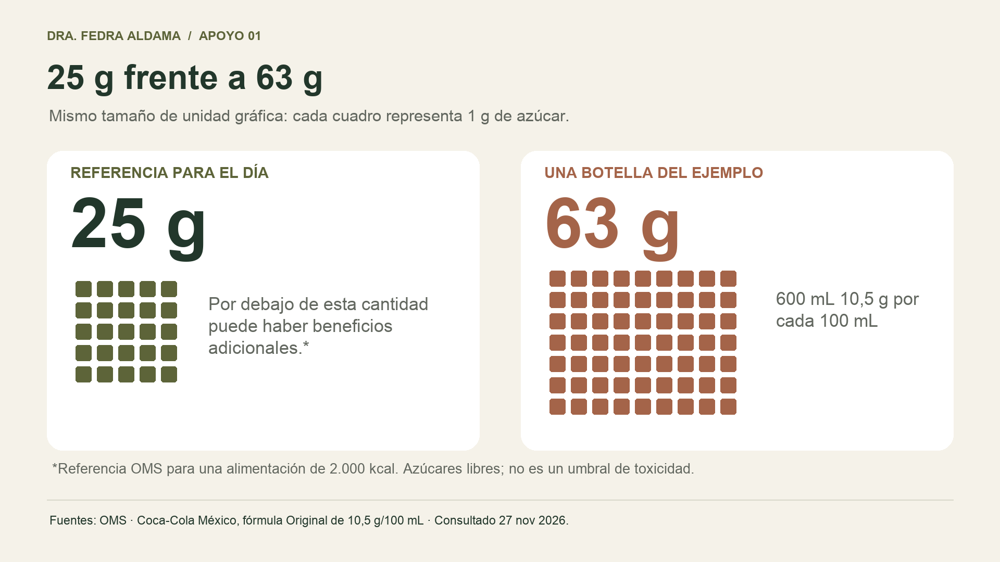
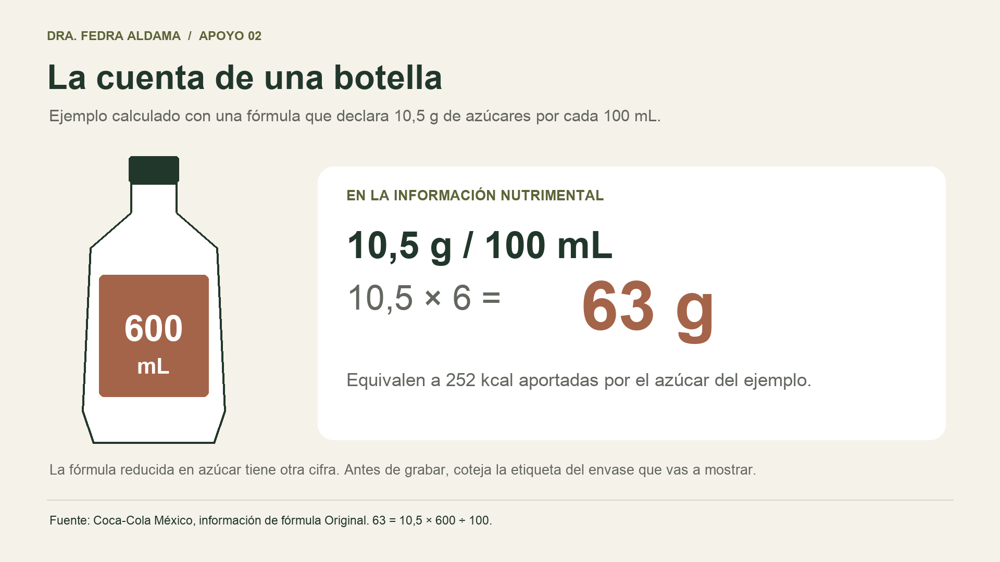
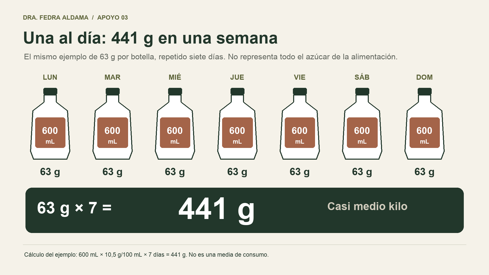
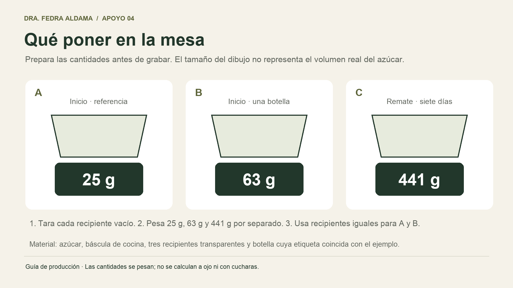

Azúcar · apoyos para grabar
Comparación inicial, cuenta de la botella y remate semanal. Las imágenes usan cantidades calculadas; las cantidades de azúcar para la mesa se pesan con báscula.
Descargar las cuatro imágenes1. Comparación inicial
25 g frente a los 63 g de una botella del ejemplo.

Descargar imagen PNG2. Cuenta de la botella
600 mL × 10,5 g por 100 mL = 63 g.

Descargar imagen PNG3. Remate de la semana
Una botella de 63 g cada día, siete días: 441 g.

Descargar imagen PNG4. Preparación de la mesa
Pesar 25 g, 63 g y 441 g. Dos recipientes iguales para la comparación inicial.

Descargar imagen PNGPara este ejemplo: usa una botella de 600 mL cuya etiqueta declare 10,5 g de azúcares por cada 100 mL. Si usas otra fórmula, cambia el cálculo y las cantidades que muestras.
Los 25 g son un punto de referencia de azúcares libres para obtener beneficios adicionales en una alimentación de 2.000 kcal; no son un umbral de toxicidad ni una indicación individual.
Fuentes: OMS · Información del fabricante.
Consultora DV · Dra. Fedra Aldama · 27 noviembre 2026